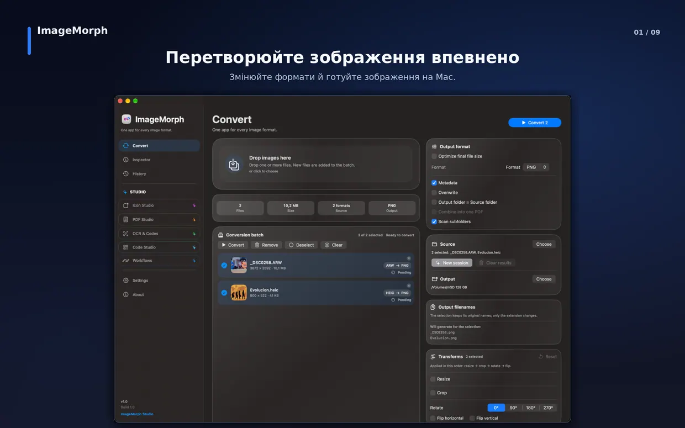
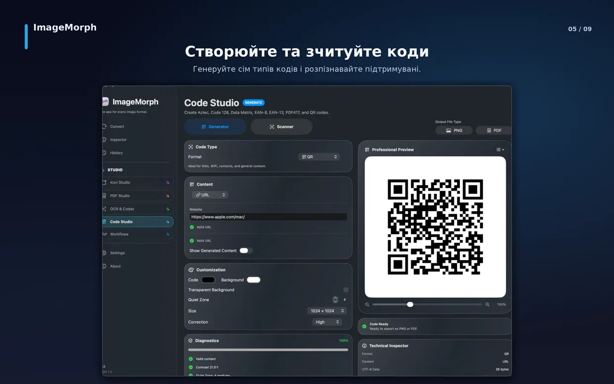
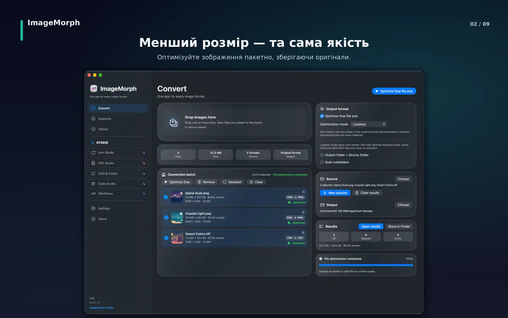
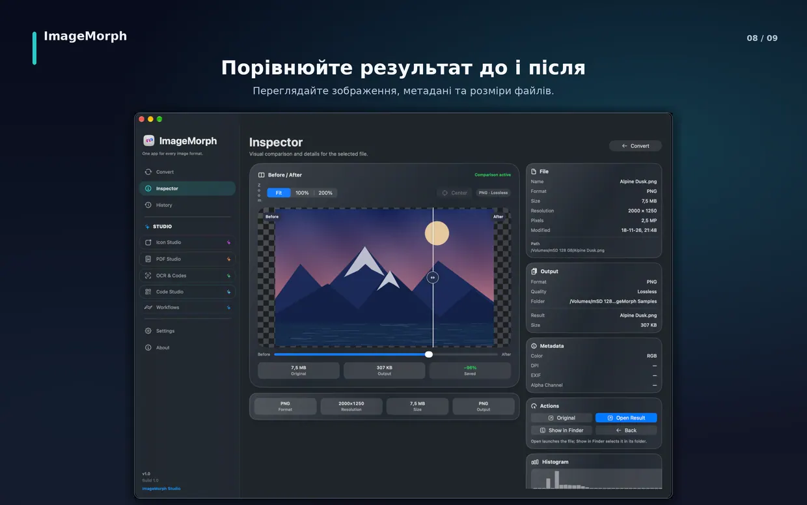
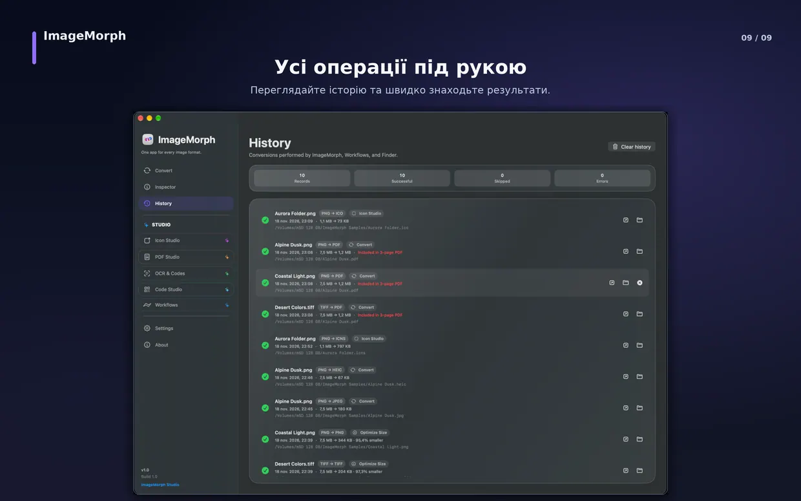
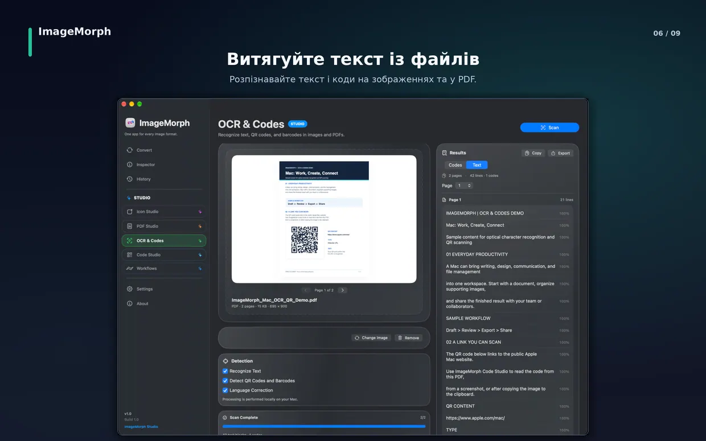
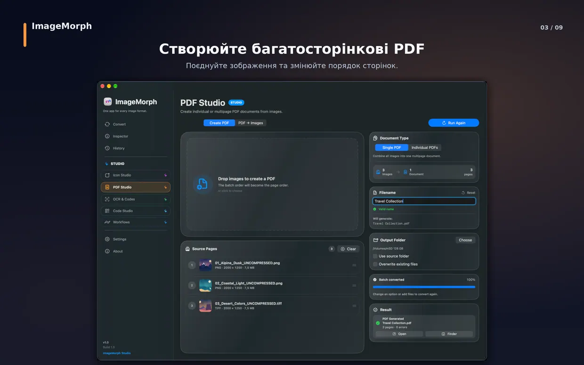
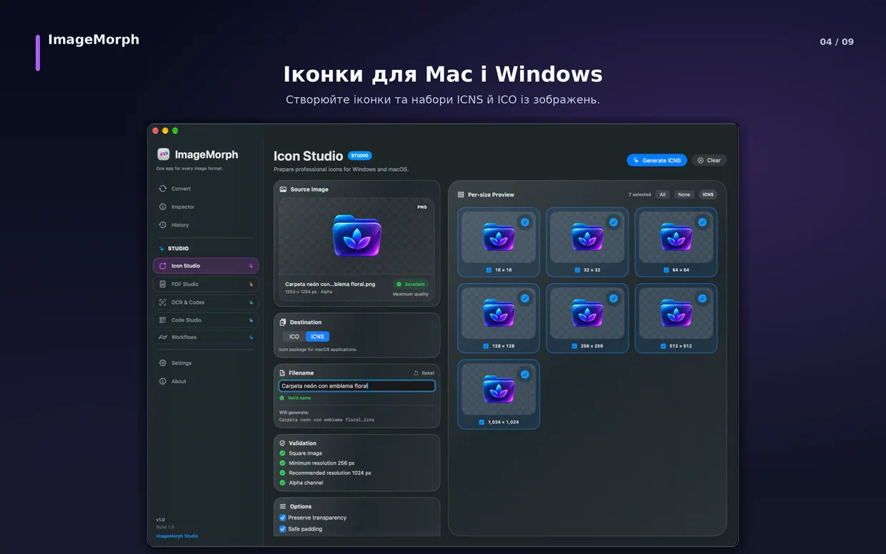
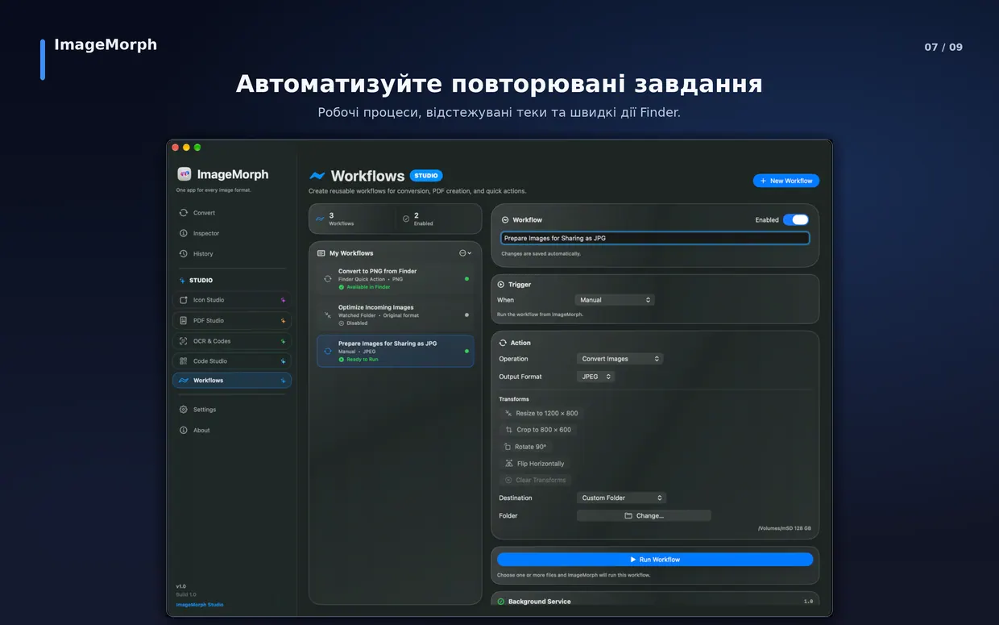

JPEG · PNG · HEIC · TIFF
JPEG, PNG, HEIC і TIFF окремо чи пакетами.

Перетворюйте, змінюйте розмір і оптимізуйте зображення. Створюйте PDF та автоматизуйте повторювані завдання на Mac.
Готуємо випуск у Mac App Store.

Перетворюйте, змінюйте розмір і оптимізуйте зображення. Створюйте PDF та автоматизуйте повторювані завдання на Mac.

Розпізнавайте текст у зображеннях і багатосторінкових PDF, перевіряйте та експортуйте результати.
Читайте QR з листа чи PDF на Mac і перевіряйте адресу перед відкриттям посилання.


Попередній перегляд URL не гарантує безпечний сайт. Перевіряйте домен і не вводьте особисті дані на підозрілих сторінках.
Інструменти кодівJPEG, PNG, HEIC і TIFF окремо чи пакетами.

Змінюйте розміри та пропорції зображень для різних задач, за потреби зберігаючи співвідношення сторін.

Підтримувана оптимізація без втрат або з втратами; вивід лише якщо менший.

Переглядайте формат, розміри та метадані. Після конвертації порівнюйте результат з оригіналом.

Переглядайте операції та відкривайте результати або показуйте їх у Finder, якщо файли ще існують.

Studio об’єднує OCR, розпізнавання кодів, PDF, іконки та автоматизацію. Разова покупка без передплати.
Studio — необов’язкова постійна покупка в застосунку.

Розпізнавайте текст у зображеннях і багатосторінкових PDF, перевіряйте та експортуйте результати.


Читайте коди з буфера обміну, зображень, PDF і папок або отримуйте їх зі сумісних камер та сканерів. Перевіряйте вміст і посилання до відкриття.


Створюйте багатосторінкові PDF, експортуйте сторінки як зображення та змінюйте поворот.

Створюйте ICO та ICNS і перевіряйте розміри перед експортом.


Генеруйте QR, Code128, Data Matrix, EAN, PDF417 та Aztec у PNG або PDF.

Зберігайте робочі процеси, відстежуйте теки та запускайте дії Finder.

Studio — необов’язкова постійна покупка в застосунку.
Питання про Studio| Функція | Free | Studio |
|---|---|---|
| Конвертація, розмір, оптимізація | Включено | Включено |
| Черга, Inspector, порівняння, гістограма | Включено | Включено |
| Базове створення PDF | Включено | Включено |
| PDF Studio й експорт сторінок | — | Включено |
| OCR та розпізнавання кодів | — | Включено |
| Генерація кодів і камера/сканер | — | Включено |
| Набори ICO й ICNS | — | Включено |
| Процеси, відстежувані папки, швидкі дії Finder | — | Включено |
Місцева ціна, доступ Studio й право на пробу відображаються у застосунку. Покупки та відновлення обробляє Apple.
Перетворення, оптимізація зображень, створення PDF та OCR виконуються на Mac. Вміст файлів не надсилається службі пробного доступу Studio. Для доступу до файлів, тек, камер і сканерів потрібні дозволи; налаштування, історія, закладки та журнали з назвами, шляхами й помилками можуть залишатися локально.
Політика конфіденційності